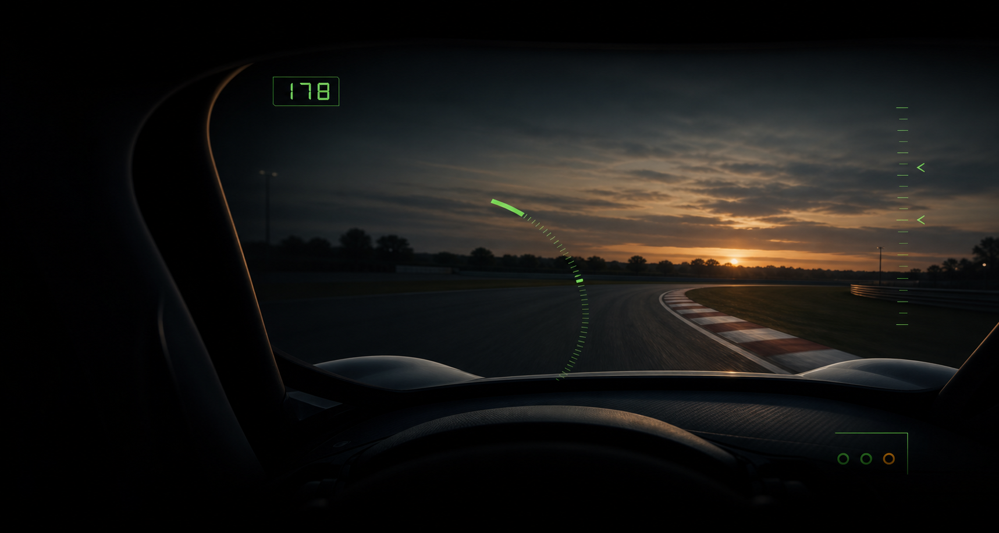

OpenXR visor
Opt-in HMD cues for private-alpha VR validation.
Private-alpha race-awareness instrument
VICA is a VR-native driver information layer for serious sim racers who need race-critical context without turning the forward view into a dashboard.

Product thesis
VICA is not an overlay pack. It is a small race-awareness instrument: display elements are allowed only when they support a real driver decision, can hide cleanly when stale, and keep the driver focused on the racing line.
Surfaces
The visor is the flagship surface. The same underlying state model is also shaped for monitor/HUD and OBS/browser output so VICA can keep one meaning across driver and viewer contexts.
Opt-in HMD cues for private-alpha VR validation.
Planned driver-facing flat-screen surface using the same display logic.
Local browser-source output for stream scenes, review, and safe support checks.
Display elements
A sparse radial segment shows wind direction and strength relative to the car while keeping the center of the view clean.
A compact incident counter helps the driver judge risk without opening a full timing or black-box panel.
A small latched speed memory readout supports practice and qualifying review without encouraging eyes-down checks.
Experimental temporal nearby-car context is under validation, with stale car positions hidden rather than held.
Trust posture
VICA display elements should disappear before they mislead. Missing, stale, invalid, or low-confidence data hides the cue instead of guessing. The user must always be able to disable the layer quickly.
Alpha interest
VICA is not presented here as a public download or race-approved product. Public alpha intake will be added only after the static trust, compatibility, install, and disable documentation has been reviewed.
Review the current manual